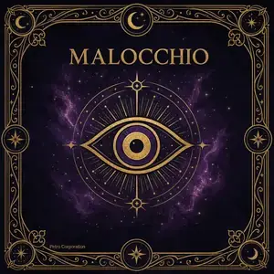

Il Malocchio
Dall'occhio di invidia dell'antichità alle pratiche di protezione della nonna: un viaggio completo nella credenza più diffusa del Mediterraneo.
Origini e Storia
🏛️ Le origini mesopotamiche
Il Malocchio è una delle credenze umane più antiche documentate. I primi riferimenti scritti risalgono alle tavolette cuneiformi sumeriche del III millennio a.C.: in testi provenienti da Lagash e Nippur si descrive l'idu, l'«occhio nemico», capace di colpire uomini, animali e raccolti con una forza invisibile trasmessa dallo sguardo. I Babilonesi svilupparono intere serie di formule apotropaiche — le Šurpu e le Maqlu — specificamente dedicate alla neutralizzazione di questo malocchio.
L'antropologa Marian Roalfe Cox stimò a fine Ottocento che la credenza nell'evil eye fosse presente in oltre 40 culture distinte su tutti i continenti. Nessuna altra superstizione ha questa diffusione geografica, il che suggerisce un'origine psicologica e sociale profonda, non una semplice trasmissione culturale.
🏺 Grecia e Roma: il fascinum
I Greci chiamavano questa forza baskania e temevano particolarmente l'occhio di chi era affetto da phthonos (invidia). Filosofi come Plutarco e Platone ne discutevano seriamente: Plutarco nel Convivium septum sapientium ipotizzava che l'occhio potesse emettere particelle sottili cariche di un'energia negativa che si trasferiva alla vittima.
A Roma il concetto divenne fascinum (da cui «fascinazione» e «fascinare»). I Romani erano talmente convinti di questa forza da cucire sulle vesti dei bambini piccoli amuleti fallici — i fascina d'oro e bronzo — e da appenderli alle entrate delle botteghe. Anche i triumfatori in parata militare avevano uno schiavo alle spalle con il compito di ripetere memento mori, in parte per neutralizzare l'invidia degli dèi sul vincitore.
📜 Il Medioevo cristiano e islamico
Nella tradizione ebraica il concetto è chiamato ayin ha'ra (עַיִן הָרָע), «occhio del male», e compare sia nel Talmud che in numerosi testi kabbalistici. Si riteneva che anche i rabbini più santi potessero involontariamente infliggere l'ayin ha'ra con uno sguardo troppo insistente su qualcosa di bello.
Il Corano (Sura 68:51) cita l'occhio maligno direttamente, e il Profeta Maometto stesso, secondo gli hadith, raccomandava recitare specifiche sure per proteggersi. Nella cultura islamica la pratica si chiama al-ʿayn ed è presente in tutto il Medio Oriente, il Maghreb e l'Iran ancora oggi.
Nel Medioevo europeo la Chiesa oscillò tra la condanna come superstizione e un'accettazione tacita. San Tommaso d'Aquino nella Summa Theologica discusse se lo sguardo potesse davvero trasmettere forza; molti teologi ammisero la possibilità di un'azione naturale dell'invidia trasmessa attraverso il contatto visivo.
🇮🇹 La tradizione italiana: jettatura e jettatori
In Italia la credenza raggiunse un'elaborazione straordinaria, specialmente nel Sud. Il termine malocchio si affianca a jettatura (dal napoletano jettare, gettare, scagliare) e indica la condizione di chi infligge il male involontariamente — il jettatore. A Napoli nel XVIII-XIX secolo la jettatura era trattata quasi come un fatto sociologico documentabile: il naturalista e viaggiatore Andrea de Jorio nel 1832 pubblicò un trattato sulle antiche gestualità difensive ancora in uso. Si tenevano liste di jettatori noti che venivano evitati per strada.
La figura più iconica è il Principe di Canino, Carlo Luciano Bonaparte, nipote di Napoleone, considerato il jettatore per eccellenza della Roma dell'Ottocento. Interi ambasciatori e nobili si alzavano e uscivano dalla stanza quando entrava. Lo scrittore Théophile Gautier nel 1857 scrisse un romanzo, Jettatura, ambientato proprio nella Napoli della credenza.
Come Riconoscerlo
⚠️ I sintomi classici
La tradizione popolare italiana identifica un cluster di sintomi ricorrenti che segnalano la presenza del malocchio. Importante sottolineare che molti di questi sintomi hanno cause mediche ordinarie e che è sempre opportuno escludere prima cause fisiologiche. Tuttavia, all'interno del sistema di credenze tradizionale, vengono letti come segnali energetici:
- Mal di testa improvviso e insistente, spesso frontale o alla nuca, che non risponde agli antidolorifici
- Stanchezza cronica inspiegabile, senso di «pesantezza» generale anche dopo il riposo
- Nausea e disturbi gastrici senza causa alimentare accertata
- Sfortuna a catena: piccoli incidenti, oggetti che si rompono, appuntamenti mancati
- Sensazione di essere osservati, disagio in luoghi affollati
- Sonno disturbato, sogni vividi e angoscianti con presenza di occhi o sguardi minacciosi
- Irritabilità e stati d'animo alterati senza ragione apparente
- Nelle tradizioni contadine: improvvisa perdita di latte nelle donne che allattano, mancanza di appetito nei bambini
- Rossori o piccole eruzioni cutanee inspiegabili, specialmente al viso
🫙 Il test dell'olio (prova del malocchio)
Il metodo diagnostico più diffuso in Italia meridionale è il «test dell'olio», tramandato oralmente di generazione in generazione e praticato ancora oggi. Varianti esistono in Sicilia, Calabria, Campania, Puglia e Sardegna, con differenze locali nei gesti e nelle preghiere.
Procedura base: Si versa dell'acqua fresca in un piatto fondo o in una ciotola (tradizionalmente la notte del 24 giugno, la vigilia di San Giovanni, considerata la più propiziatoria). Chi effettua il test recita mentalmente o sottovoce una preghiera apotropaica — mai detta ad alta voce per non disperderne la potenza. Poi, tenendo il dito indice o il pollice immerso nell'olio extravergine d'oliva, fa cadere tre gocce nell'acqua.
L'interpretazione: se le gocce rimangono unite e rotonde galleggiando in superficie, non c'è malocchio. Se si spaccano, si disperdono in molte goccioline piccole o — segno più grave — affondano completamente, il malocchio è presente. Più le gocce si disperdono, più il malocchio è considerato intenso.
✂️ Il test delle forbici e del sale
Altro metodo diagnostico diffuso è il test delle forbici: si aprono un paio di forbici a punta verso il basso e si posizionano sul capo della persona sospettata di portare malocchio (o sulla persona colpita). Se le forbici rimangono in equilibrio sulle punte del capello o cadono in un senso preciso, viene interpretato come conferma.
Il test del sale è invece usato per valutare l'intensità: si mette del sale grosso in padella senza condimenti. Se il sale scoppietta e salta in modo insolito rispetto al normale, si legge come segnale che il malocchio è in corso di «bruciatura» — ovvero che la negatività si sta scaricando.
Come Togliere il Malocchio
📿 Il rituale dell'olio (rimozione)
Il medesimo test diagnostico dell'olio diventa, nelle mani della guaritrice (mammana, fattucchiera o guaritrice a seconda della regione), anche il rituale curativo. La persona che sa «fare il malocchio» — in genere una donna di fiducia che ha ricevuto il dono il giorno di Natale o di San Giovanni — ripete il gesto più volte.
- Riempire una ciotola con acqua raccolta all'alba (tradizionalmente acqua di sorgente o acqua piovana raccolta la notte del 23 giugno)
- Tenere il pollice nell'olio extravergine e far cadere tre gocce pronunciando interiormente il nome del santo protettore
- Osservare le gocce: se si unificano, il malocchio sta cedendo
- Ripetere per tre volte, poi versare l'acqua a terra lontano dalla soglia di casa
- Chi ha ricevuto il trattamento non deve ringraziare — il ringraziamento «rompe» il potere
- Preparare un piatto con tre manciate di grano grezzo e una manciata di sale grosso marino
- Far girare il piatto tre volte attorno alla testa della persona colpita in senso orario
- Recitare una preghiera apotropaica (ogni famiglia ha la propria versione, spesso a San Michele Arcangelo o alla Madonna)
- Bruciare il grano e il sale in un braciere o versarli a un incrocio di strade
- Fare il bagno con acqua in cui sia stato sciolto un pugnetto di sale grosso benedetto
- Accendere tre candele nere (o bianche, a seconda della variante familiare) su un altarino con l'immagine di un santo
- Far sedere la persona colpita davanti alle candele, in silenzio
- Passare un uovo intero (di gallina nera nella versione più antica) su tutto il corpo della persona, dalla testa ai piedi
- Rompere l'uovo in un bicchiere d'acqua: il tuorlo e l'albume mostreranno figurazioni che la guaritrice legge per capire l'intensità e la provenienza del malocchio
- Gettare l'uovo via dalla finestra o seppellirlo fuori casa
🙏 Preghiere e formule
Il componente più segreto e trasmesso oralmente è la formula verbale — spesso una combinazione di preghiera cristiana e formula magica pre-cristiana. La struttura tipica è: invocazione a una figura sacra (la Madonna, San Luigi Gonzaga, Santa Lucia protettrice degli occhi), descrizione del danno, richiesta di rimozione, sigillo con un numero ripetuto tre o sette volte.
In molte tradizioni la guaritrice non doveva rivelare la formula se non a qualcuno della propria famiglia, esclusivamente la sera di Natale o la notte di San Giovanni — e solo a una persona di sesso opposto, per mantenere alternata la catena di trasmissione (donna → uomo → donna → uomo). Chi avesse svelato la formula fuori da questa circostanza avrebbe perso il «dono» per sempre.
Protezione e Amuleti
🪬 I grandi amuleti anti-malocchio
🏠 Protezione della casa
Tradizionalmente la protezione della casa dal malocchio era affidata a una serie di pratiche preventive. Sopra la porta di ingresso si appendeva un fascio di erbe protettive — ruta, aglio, fiori di campo secchi e un corno rosso. In alcune zone della Calabria e della Sicilia si seppelliva sotto la soglia un amuleto sigillato contenente sale, grano e una moneta.
Lo specchio con la faccia rivolta verso la porta era un dispositivo apotropaico: rifletteva il malocchio indietro verso chi lo portava. Numerose case meridionali avevano la corna («lu juorno», «il corno del giorno») appesa nella stanza principale con funzione decorativa e protettiva insieme.
Nelle tradizioni contadine più antiche si bruciava periodicamente dell'incenso di mirra o di resina di pino in tutti gli angoli della casa, specialmente dopo la visita di ospiti, per «nettare» l'atmosfera da eventuali energie negative lasciate da sguardi invidiosi.
👶 Protezione dei bambini
I bambini piccoli — e in particolare i neonati — erano considerati le vittime più vulnerabili al malocchio. La loro delicatezza, la loro vitalità evidente e la gioia che ispiravano li rendevano bersagli naturali dell'invidia inconscia degli adulti.
I neonati non venivano mostrati a estranei per i primi quaranta giorni. Le visite erano limitate alla cerchia familiare stretta. Alle bambine si metteva un filo rosso al polso (pratica condivisa anche nella tradizione kabbalistica). Al primo taglio dei capelli si bruciavano i ritagli invece di buttarli, per non lasciare «materiale» a disposizione di chi potesse fare un maleficio.
Quando qualcuno faceva un complimento al bambino, era obbligatorio aggiungere immediatamente «senza malocchio», «salvo sia», o fare il gesto delle corna con la mano. Il complimento, per bello che fosse, era considerato potenzialmente pericoloso se non neutralizzato verbalmente.
🙌 I gesti apotropaici
Il gesto delle corna — indice e mignolo tesi, pollice, medio e anulare piegati — è il gesto apotropaico anti-malocchio più diffuso d'Italia. Le sue radici sono preromane e si collegano alla mano cornuta come simbolo lunare e fertilissimo della cultura agricola mediterranea. Puntato verso il basso «scarica» il malocchio a terra; puntato verso una fonte potenziale di invidia serve da scudo preventivo.
Il gesto del «toccare ferro» in Italia si associa anche al toccare il corno rosso. L'origine del ferro come materiale protettivo risale probabilmente all'età del ferro: il metallo lavorato era raro, magico e associato alla folgore degli dèi (il ferro dei meteoriti era considerato il «metallo del cielo»).
In Napoli e in tutto il Sud era ed è comune lo sputare a terra tre volte dopo aver visto qualcosa di troppo bello o aver sentito un complimento eccessivo su di sé o su qualcuno di caro. Lo sputo simboleggiava l'espulsione dell'invidia prima che potesse radicarsi.
Tradizioni nel Mondo
🇹🇷 Turchia e Grecia: il Nazar
In Turchia la credenza nell'evil eye (nazar boncuğu) è talmente radicata da essere diventata parte del design nazionale: migliaia di Nazar — amuleti in vetro blu concentrici che replicano la forma di un occhio — adornano taxi, ristoranti, case, collane e portachiavi. La tradizione vuole che quando il Nazar si rompe, abbia assorbito e neutralizzato un malocchio che stava per colpire il possessore.
In Grecia il mati (ματιά) è l'equivalente diretto. La tradizione ellenica ha elaborato specifici rituali di diagnosi molto simili a quelli italiani meridionali — a riprova di una radice culturale mediterranea comune. La cerimonia greca chiamata xemátiasma prevede una guaritrice che recita sottovoce le parole tramandate, beve dell'acqua e poi la fa bere alla persona colpita.
🇮🇳 India e Subcontinente
In India la credenza si chiama nazar (नज़र) o drishti e attraversa tutte le tradizioni religiose — induismo, Islam, Sikhismo, Jainismo. I bambini vengono protetti con un punto nero (kajal o carbone) dietro l'orecchio o sulla fronte, invisibile agli altri, che «rompe» la simmetria della bellezza e distrae il malocchio.
La cerimonia di purificazione più comune è il nazar utarana: si fa girare attorno alla testa della persona un guscio di cocco, sale grosso, peperoncini rossi secchi o un uovo. Il materiale assorbe il malocchio e viene poi bruciato o gettato in acqua corrente. Varianti usano incenso, camphor e polvere di curcuma disegnata in cerchi protettivi.
🌍 Africa e diaspora afrocaraibica
Nel Voodoo haitiano e nel Candomblé brasiliano il malocchio trova corrispondenza nell'olho gordo (Brasile) o nel concetto di mauvais oeil (Haiti). Le tradizioni di protezione includono l'uso di fili e braccialetti colorati (ogni colore corrisponde a un Orixá protettore), bagni rituali con erbe, e la consultazione dell'oracolo per determinare l'azione correttiva appropriata.
In Etiopia e in molte culture dell'Africa orientale l'evil eye si chiama buda ed è ritenuto capace di causare malattie gravi. Le classi artigiane — fabbri, vasai, tessitori — erano tradizionalmente sospettate di portare il buda, probabilmente perché le loro arti trasformative erano percepite come «magiche».
🏆 Il record: la credenza più diffusa al mondo
Uno studio del 2009 dell'antropologo Clarence Maloney, pubblicato nell'opera collettiva The Evil Eye, ha identificato la credenza nel malocchio come presente in oltre cento culture distinte, su tutti e sei i continenti abitati. Nessun'altra singola superstizione ha questa distribuzione geografica e demografica.
La spiegazione psicologica prevalente oggi è che il malocchio risponda a un meccanismo evolutivo reale: la capacità umana di percepire l'invidia altrui e di tutelarsi da comportamenti potenzialmente sabotatori da parte dei concorrenti sociali. I rituali anti-malocchio sarebbero quindi strategie culturali codificate per gestire l'ansia sociale legata all'esposizione, all'eccellenza e al successo.
Falsi Miti sul Malocchio
🔴 Solo chi ha gli occhi chiari può fare il malocchio
🔴 Solo le persone malvagie fanno il malocchio
🔴 Il malocchio è solo un fenomeno dell'Italia meridionale
🔴 Basta comprare un cornicello per proteggersi
🔴 Le app e i video su YouTube possono togliere il malocchio
🟢 Cosa è realmente documentato
Ciò che la psicologia e le neuroscienze confermano è che la percezione dell'invidia altrui ha effetti misurabili sul sistema nervoso autonomo: aumenta il cortisolo (ormone dello stress), riduce le performance cognitive e motorie, altera la qualità del sonno. In questo senso, l'«occhio maligno» dell'invidia produce effetti fisiologici reali sulla vittima che lo percepisce — anche se il meccanismo è psicosomatico, non magico.
I rituali tradizionali, in questo contesto, funzionano come interventi psicologici strutturati: danno una spiegazione all'esperienza negativa (diminuendo l'ansia dell'ignoto), attivano un senso di agenzia (qualcosa sta per essere fatto), e segnalano la presa in carico da parte della comunità (non sei solo). Questi meccanismi hanno effetti reali sul benessere soggettivo.
Miti e Personaggi Leggendari
🦎 Il Basilisco
Il Basilisco è forse la creatura mitologica più direttamente connessa al malocchio. Descritto già da Plinio il Vecchio nella Naturalis Historia come un piccolo serpente incoronato, il Basilisco uccideva con lo sguardo o con il soffio. La sua unica debolezza era il proprio riflesso: se costretto a guardare se stesso in uno specchio, la potenza fatale del suo occhio si rivoltava contro di lui.
Questa leggenda è probabilmente l'origine della pratica di usare specchi come protezione contro il malocchio: lo specchio non solo riflette la luce ma «rimanda indietro» il malocchio verso chi lo ha emesso. Il Basilisco appare nella mitologia medievale europea, nella tradizione alchemica (come simbolo del veleno che guarisce) e — molto più tardi — nella saga di Harry Potter.
🐍 Medusa e l'occhio pietrificante
Medusa, la Gorgone dalla chioma di serpenti che pietrificava chiunque la guardasse direttamente, è un'elaborazione mitica del tema del malocchio portata all'estremo: uno sguardo che uccide trasformando la vittima in pietra. La testa di Medusa, dopo essere stata decapitata da Perseo con l'aiuto di uno specchio, non perdeva il suo potere pietrificante — e proprio per questo veniva apposta sugli scudi come simbolo apotropaico (aegis), perché era capace di pietrificare i nemici che guardavano l'esercito.
Il gorgoneion — la testa stilizzata di Medusa — era uno degli amuleti più diffusi nell'antichità greca e romana, applicato su monete, armature, porte e ceramiche. La logica è identica al Nazar turco: un occhio che «risponde» al malocchio con eguale potenza.
👁️ L'Occhio di Ra e l'Udjat egiziano
L'Antico Egitto contribuì al tema dell'occhio potente con il simbolo dell'Udjat o Occhio di Horus — l'occhio protettivo e guaritore del dio falco, perso nella battaglia con Set e poi restaurato da Thoth. Rappresentato sui sarcofagi, sulle prue delle barche da pesca (dove sopravvive ancora oggi nel Mediterraneo!) e su amuleti in faience, l'Udjat aveva la doppia funzione di proteggere e di vedere attraverso l'inganno.
Le barche da pesca del Mediterraneo, in particolare a Malta, a Lampedusa e nella Sicilia meridionale, portano ancora oggi disegnato sull'arco della prua un occhio stilizzato. L'uso è identico a quello egiziano e fenicio: l'occhio «vede» i pericoli invisibili e i malocchi, proteggendo l'imbarcazione e il suo equipaggio.
👀 Il jettatore più famoso della storia
Oltre al già citato Principe di Canino, la tradizione napoletana e romana del XIX secolo attribuiva poteri di jettatura straordinari al Papa Pio IX (1792–1878). La leggenda vuole che la prima cerimonia dopo la sua elezione pontificia fu oscurata da una serie di sciagure: cadde un'impalcatura, un cavallo imbizzarrì, un cardinale svenne. Da lì nacque la superstizione che il Papa fosse un jettatore involontario.
Il re Vittorio Emanuele II, nonostante la guerra politica con il Vaticano, era così convinto della jettatura del Papa da fare sistematicamente le corna nascondendole in tasca ogni volta che il nome di Pio IX veniva pronunciato in sua presenza. Questa storia, documentata da cronisti dell'epoca, mostra come la credenza attraversasse ogni strato sociale e ogni posizione politica nell'Italia dell'Ottocento.
Hai trovato utile questa guida sul Malocchio?
FAQ
I sintomi classici includono mal di testa improvviso e frontale, stanchezza cronica inspiegabile, nausea, sfortuna a catena (oggetti che si rompono, incidenti), sonno disturbato con sogni angoscianti e irritabilità senza causa. Il test diagnostico più antico e diffuso è il test dell'olio: tre gocce di olio extravergine versate in acqua — se rimangono unite non c'è malocchio; se si disperdono o affondano, la presenza è confermata.
Ogni regione italiana ha il proprio rituale. In Campania si usa l'Olio di San Giovanni (tre gocce d'olio in acqua, ripetuto tre volte). In Sicilia il rituale del Grano e del Sale prevede far girare il piatto attorno alla testa della persona colpita prima di bruciarne il contenuto. In Calabria le Tre Candele prevedono il passaggio di un uovo su tutto il corpo. Il componente essenziale è sempre la formula verbale tramandata oralmente, mai divulgabile fuori dalla famiglia.
Secondo la tradizione autentica, il cornicello funziona solo se rispetta tre condizioni: deve essere regalato (mai acquistato per sé), deve essere in corallo vero o oro puro (non metalli industriali), e deve essere "caricato" attraverso un rituale o benedizione. Un cornicello di plastica o metallo industriale comprato per sé al mercato non ha il potere protettivo della tradizione originale — nella logica del folklore, mancano i requisiti fondamentali.
Chiunque, incluse persone che amano sinceramente la vittima. Nella tradizione autentica il meccanismo non è morale ma energetico: è l'invidia — anche del tutto inconscia — il vettore della trasmissione. Ecco perché la formula «ti voglio bene, senza malocchio» era obbligatoria dopo un complimento sincero, e perché i neonati venivano protetti anche dai parenti più amorevoli.
No, è documentato in oltre cento culture su tutti i continenti. In Turchia il Nazar boncuğu; in Grecia il Mati; nella tradizione ebraica l'Ayin ha'ra; in quella islamica l'Al-ʿayn (citato direttamente nel Corano); in India il Nazar/Drishti; in Etiopia il Buda. Lo studio dell'antropologo Clarence Maloney (2009) lo ha identificato come la superstizione con la maggiore distribuzione geografica al mondo.
La psicologia documenta che la percezione dell'invidia altrui produce effetti fisiologici misurabili: aumento del cortisolo, riduzione delle performance cognitive e motorie, alterazione del sonno. I rituali anti-malocchio funzionano come interventi psicologici strutturati: forniscono una spiegazione all'esperienza negativa, attivano un senso di agenzia e segnalano la presa in carico da parte della comunità. Questi meccanismi hanno effetti reali sul benessere soggettivo.
✦ I contenuti di questa pagina hanno scopo informativo e culturale. Le pratiche descritte appartengono al folklore e alla tradizione popolare. Per qualsiasi sintomo fisico o psicologico rivolgersi sempre a un professionista della salute. ✦